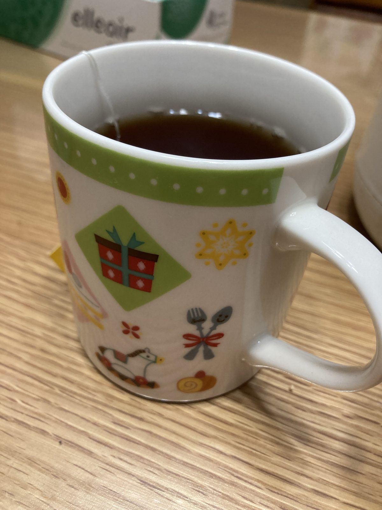

真面目で完璧主義はうつになる
生きるよく見かけるこれよ。
真面目
完璧主義
正義感が強い
全当てはまり。
まあ双極性障害だけど。うつ病とはちょっと違うけど。
こんな、「いい人」のお手本のような性格がうつになりやすいなんて、どうやって生きてったらいいのん。
それを美徳としてならってきたのに。
鬱期はつらぁい。
甘えとかじゃない。
鬱でも頑張ってしまう。
そしてすり減っていく。
体が重い。気持ちが重い。横になっても休まらない。
もう何年も精神科に通ってんのによくならねえ。
生き方変えないと無理だよ…
でもどうしたらいいのかわからん…
まず休んでいいってのがわからん…
自分がしあわせになっていいのかもわからん…
どこか無意識の深いところで
❌❌でなきゃダメ
❌❌しなきゃダメ
みたいな縛りの声がきこえてくるねん…
己に縛られとんねん…
結局は抑うつも
ありのままの自分を受け入れられない自分が
怒って悲しんでいる
そんな気がする
小さな自分がずっと
泣いてる気がする